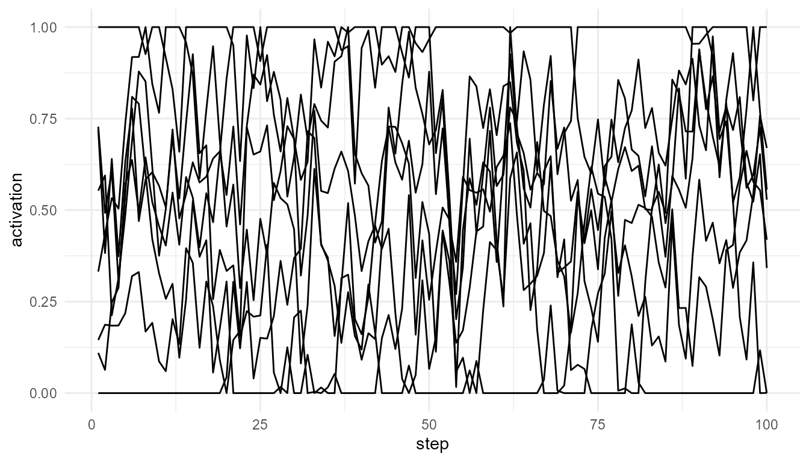

Information Integration
Source:vignettes/information-integration-theory.Rmd
information-integration-theory.RmdPurpose
This article explains the theoretical background behind
simulate_information_integration(). The function is
inspired by information-integration approaches to consciousness,
especially the idea that consciousness may depend on both integration
and differentiation.
The function does not calculate formal phi and should not be presented as an implementation of Integrated Information Theory.
Integration and differentiation
A system can be highly differentiated if its parts carry distinct patterns of activity. A system can be highly integrated if its parts influence one another and behave as a coordinated whole.
A common intuition in information-integration theories is that consciousness requires both. A system that is completely fragmented lacks unity. A system that is completely uniform lacks differentiated content.
Relation to the package
simulate_information_integration() creates a simple
network of components. Components influence one another through
connections. The function then computes an educational integration score
based on average connectivity, shared activity among components, and
differentiation among component states.
This score is not a clinical, neuroscientific, or philosophical measure of consciousness.
Basic simulation
info <- simulate_information_integration(
n_components = 8,
steps = 100,
connection_probability = 0.30,
seed = 42
)
info$summary
#> mean_connectivity shared_information differentiation integration_score
#> 1 0.5625 0.3072903 0.3431688 0.05931701
plot_consciousness_sim(
info$time_series,
x = "step",
y = "activation",
group = "component"
)
Comparing sparse and dense systems
sparse <- simulate_information_integration(
connection_probability = 0.10,
seed = 42
)
moderate <- simulate_information_integration(
connection_probability = 0.30,
seed = 42
)
dense <- simulate_information_integration(
connection_probability = 0.70,
seed = 42
)
rbind(
sparse = sparse$summary,
moderate = moderate$summary,
dense = dense$summary
)
#> mean_connectivity shared_information differentiation integration_score
#> sparse 0.34375 0.2009751 0.3645807 0.02518713
#> moderate 0.56250 0.3072903 0.3431688 0.05931701
#> dense 0.75000 0.1635655 0.3287365 0.04032746Interpretation
Sparse systems may show weak integration because components are not strongly connected. Very dense systems may show high coupling but reduced differentiation if all components behave similarly. Moderate systems may sometimes balance integration and differentiation.
This illustrates a central theoretical tension: a system must be unified enough to function as a whole, but differentiated enough to support rich content.
Relation to other functions
This model complements broadcast_network(). Broadcast
models emphasize access and availability. Integration models emphasize
internal structure and causal organization.
Limitations
This simulation is only an educational proxy. Formal Integrated Information Theory is mathematically complex and has specific definitions that are not implemented here.
Suggested readings
- Tononi, G. (2004). An information integration theory of consciousness.
- Oizumi, M., Albantakis, L., & Tononi, G. (2014). Integrated Information Theory 3.0.
- Seth, A. K., Barrett, A. B., & Barnett, L. (2011). Causal density and integrated information.
- Chalmers, D. J. (2016). The combination problem for panpsychism.